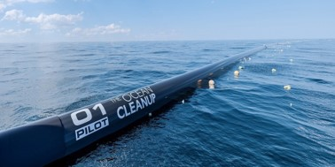
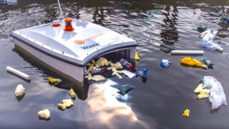
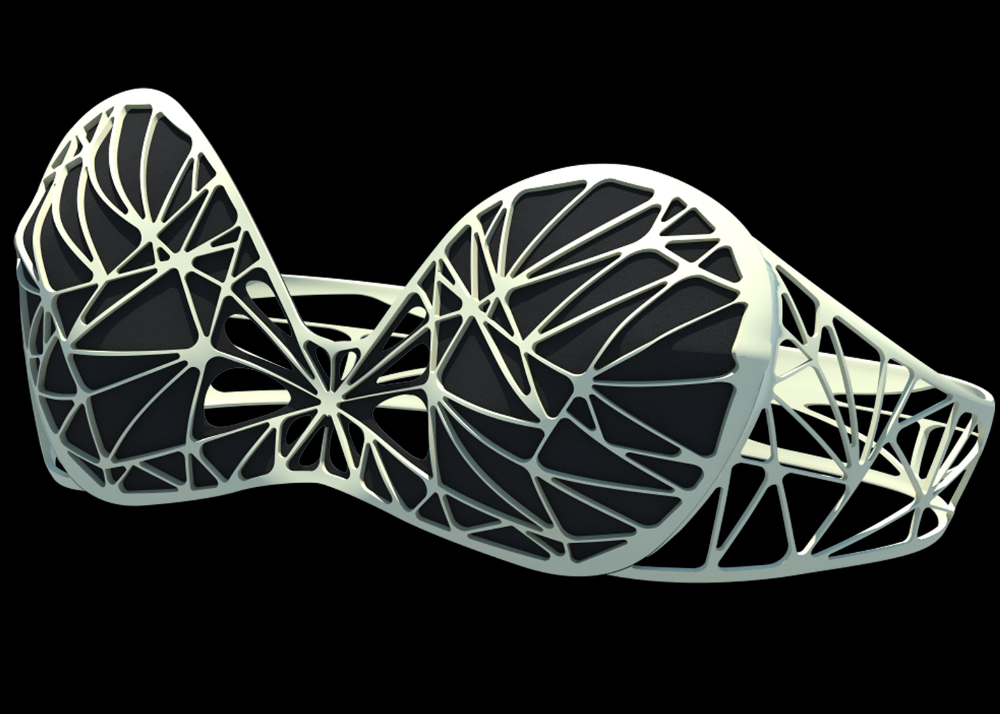

Oceani
L'oceano diventa sempre più la discarica della Terra. Dai sacchetti di plastica ai pesticidi, la maggiore parte dei rifiuti prodotti dall'uomo finisce in un modo o nell'altro in mare. Anche le navi e le piattaforme petrolifere fanno la loro parte. Il WWF si adopera per richiamare all'ordine autorità e aziende affinché siano elaborate e adottate misure volte alla tutela delle acque marine.
Goal 14
L’inquinamento da plastica è un problema globale, tanto che le Nazioni Unite hanno inserito la tutela dei mari tra gli Obiettivi di Sviluppo Sostenibile: è il Goal 14 – Vita sott’acqua. Nell’Agenda 2030 si legge che occorre “conservare e utilizzare in modo durevole gli oceani, i mari e le risorse marine per uno sviluppo sostenibile”.
Plastica
Secondo un recente rapporto del Programma delle Nazioni Unite per l’Ambiente (PNUA), le plastiche, in particolare i sacchetti e le bottiglie in PET, sono i rifiuti marini più diffusi al mondo: in molti mari regionali costituiscono oltre l’80% dei rifiuti.
COS'E' LA CYBERSECURITY
La cybersecurity è quell’insieme di tecnologie e procedure in grado di proteggere i sistemi informatici, in particolare la loro integrità. Le caratteristiche spiegano al meglio il concetto di cybersecurity sono due:
-

Cybersecurity
La macchina sfrutta le correnti del mare per far sì che i rifiuti di plastica si accumulino nelle piattaforme e il mare si pulisca “da solo”. Il sistema è composto da una catena di barriere galleggianti della lunghezza di due chilometri e alimentata ad energia solare. Poste in favore di corrente, senza reti, permettono di convogliare la plastica verso piattaforme che fungono da imbuto. Una volta al mese circa una barca andrà raccogliere i rifiuti convogliati verso la parte centrale della macchina.
-

WASTESHARK
Piccoli robot aspirapolvere programmati per pulire il mare dalla plastica in autonomia. La batteria permette fino a 16 ore di pulizia del mare senza interruzioni e il suo serbatoio centrale consente di raccogliere fino a 350 chili di plastica al giorno. Inoltre WasteShark ha anche diversi sensori al suo interno e raccoglie tantissimi dati sulla quantità di plastica presente e sull’inquinamento generale delle acque in cui agisce inviando le informazioni a un team di esperti. -

IL BIKINI CHE RIPULISCE IL MARE
All'Università di California, hanno inventato un bikini che assorbe gli inquinanti in acqua. In realtà il bikini è solo una delle possibili applicazioni di un materiale molto interessante su cui il team di Mihri Ozkan sta lavorando da quattro anni. È un composto spugnoso a base di carbonio, progettato per desalinizzare l'acqua o ripulirla da oli e contaminanti chimici. È idrorepellente, ma assimila quasi ogni altro tipo di elemento fino a 25 volte il suo peso.
Ogni minuto finisce in mare un camion di rifiuti di plastica
L’ obbiettivo della sicurezza informatica è il monitoraggio delle vulnerabilità passando per l’attuazione di servizi di prevenzione e di risposte alle minacce esterne. Le cyberminacce sono diverse si possono distinguere in:
Principi delle 4 R
Le forme di smaltimento dei rifiuti quali la discarica e l’incenerimento costituiscono la destinazione ultima dei rifiuti non recuperabili in altro modo. La priorità, secondo la normativa vigente, è data invece dalle “Quattro R” cioè:
- Ridurre: optare per prodotti con meno imballaggi, borse in stoffa, batterie ricaricabili;
- Riusare: scegliere il vuoto a rendere, il vetro al posto della plastica;
- Riciclare: selezionare i rifiuti, adottare la raccolta differenziata;
- Recuperare: produrre oggetti diversi dalla loro funzione originale, inventare nuovi utilizzi.
Soluzioni giuridiche
Numerose ed eterogenee sono le soluzioni giuridiche offerte dall'Unione Europea nella "Lotta alla plastica":
- Rendere tutti gli imballaggi di plastica riutilizzabili o riciclabili entro il 2030;
- Divieto totale per gli ogetti di plastica monouso di cui esiste una versione alterntiva già disponibile sul mercato;
- Raggiungere entro il 2029 la raccolta del 90% delle bottiglie di plastica (per esempio attraverso il sistema dei vuoti a rendere) e l'obbligo di etichettatura per alcuni prodotti;
- Utilizzare plastica riciclata per la produzione delle botttiglie in percentuali pari al 25% entro il 2025 e al 30% entro il 2030;
- Riduzione dell'uso delle buste di plastica leggere.